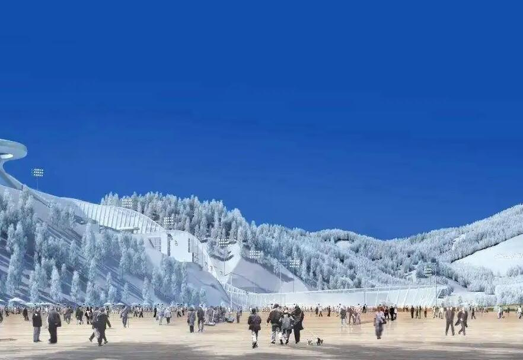
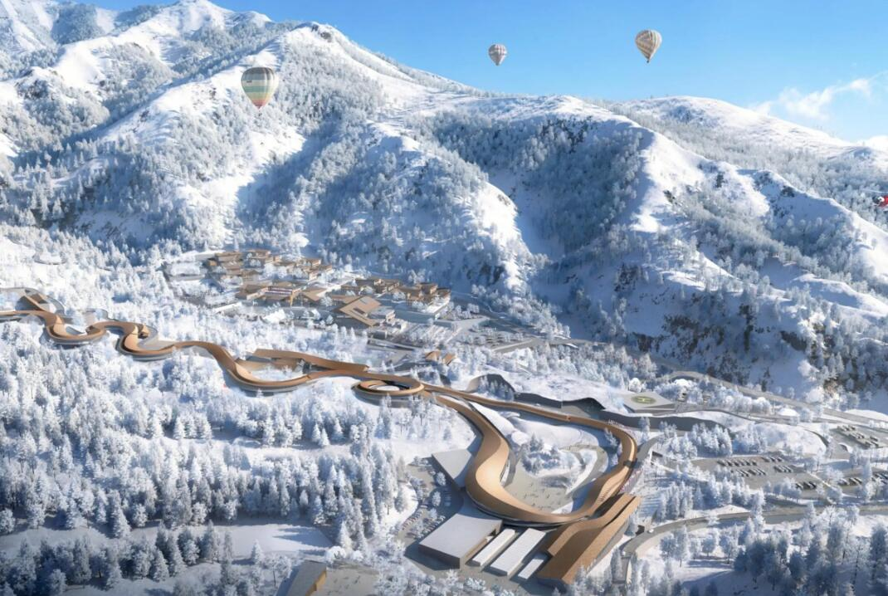

On July 31, 2015, Thomas Bach announced that the host city of the 2022 Winter Olympic Games is Beijing. Beijing has become the first city to host three international events: the summer Olympic Games, the Winter Olympic Games and the Asian Games. It is also the second capital city to host the Winter Olympic Games 70 years after Oslo, Norway, in 1952, At the same time, Zhangjiakou successfully won the right to host the 2021 International Snow Federation freestyle skiing and Snowboarding World Championships with the opportunity of jointly bidding with Beijing for the 2022 Beijing Winter Olympics, and Shijingshan District of Beijing became the first city in China to win the right to host this event, At the same time, Beijing and Zhangjiakou have become cities that have won the right to host the Winter Olympic Games for the first time in China.
There are 7 major events, 15 sub items and 109 minor events in the Beijing Winter Olympic Games. Beijing will host the ice project, Zhangjiakou will host the snow project, and Yanqing will co host the snow project in Zhangjiakou. At 20:22 on December 15, 2017, the emblem of Beijing 2022 Winter Olympic Games "winter dream" and the emblem of winter Paralympic Games "leap" were officially unveiled.
The 23rd Winter Olympic Games closed at Pingchang Olympic Stadium on the evening of February 25, 2018. Chen Jining, mayor of Beijing, took over the Olympic flag, marking the entry of the Winter Olympic Games into the "Beijing cycle". On August 8, 2018, the launching ceremony of the global collection of mascots for the 2022 Beijing Winter Olympic Games and winter Paralympic Games was grandly held in Beijing. On November 16, 2018, the Beijing Winter Olympics sustainability advisory and suggestion Committee was officially established and held its first plenary meeting.
National speed skating hall
National ski jumping center
National alpine skiing center
The opening and closing ceremonies of Beijing 2022 Winter Olympic Games and Paralympic Games are planned to be held in the urban area of Beijing. A total of three major events and five sub events including skating (including short track speed skating, speed skating and figure skating), ice hockey and curling will be held. There are five competition venues in the Beijing competition area, including four water cube, National Stadium Wukesong Gymnasium and capital gymnasium, which will hold curling, men's ice hockey, women's ice hockey, short track speed skating and figure skating competitions respectively. Of the 12 ice sports venues required for the Winter Olympics, 11 are ready-made. In addition, a new venue, the national speed skating hall, needs to be built in the south of the tennis center of Beijing Olympic Forest Park.
Zhangjiakou will host competitions in ski jumping, snowboarding, freestyle skiing, Nordic biathlon, winter biathlon and cross-country skiing. On January 19, 2015, the Winter Olympic bid committee announced the planning of the proposed Olympic venues in Zhangjiakou. Five competition venues will be newly built and reconstructed, including the national ski jumping center, the national cross-country ski center, the national biathlon center Miyuan Yunding paradise Located in the xiaohaituo mountain area of Yanqing District, about 90 kilometers away from the urban area in the northwest of Beijing, the alpine skiing project of sledge, snowmobile and skiing will be held. Yanqing was originally selected because the xiaohaituo area of Yanqing is more favorable, and there will be two competition venues here, namely the national alpine skiing center and the national snowmobile and sledge center.
At 3 p.m. on December 15, 2015, the Organizing Committee of Beijing 2022 Winter Olympic Games and winter Paralympic Games held its inaugural meeting in the Great Hall of the people in Beijing. The General Assembly announced that Guo Jinlong, Secretary of the Beijing Municipal Party committee, served as the chairman of the Beijing Winter Olympic Organizing Committee and Liu Peng, director of the State Administration of sports, served as the executive chairman. The establishment of the Beijing Winter Olympics Organizing Committee marks a new stage in the preparations for the Beijing 2022 Winter Olympics. A series of work related to the events, such as venue construction and transformation, traffic planning, environmental protection, competition services and so on, will also be put on the agenda.
| chairman | Cai Qi: Secretary of Beijing Municipal Party committee |
| Executive Chairman | Chen Jining: Mayor of Beijing |
| Gou Zhongwen: Director General of the State Administration of sports | |
| Xu Qin: Governor of Hebei Province | |
| Zhang Haidi: President of China Disabled Persons' Federation | |
| Executive vice chairman | Zhang Jiandong: Vice Mayor of Beijing |
| Vice president | Yang Shuan: Vice President of the Chinese Olympic Committee |
| Xu Jianpei: Vice Governor of Hebei Province | |
| Zhou Changkui: President of China Disabled Persons' Federation | |
| Yu Zaiqing: Vice President of the International Olympic Committee |
©2022 Beijing Winter Olympic Games